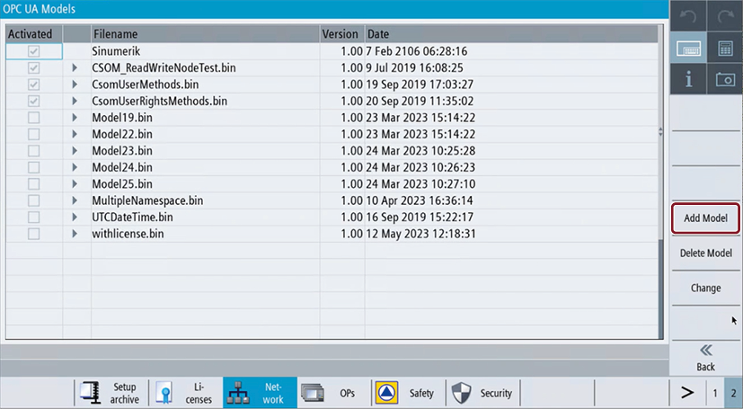
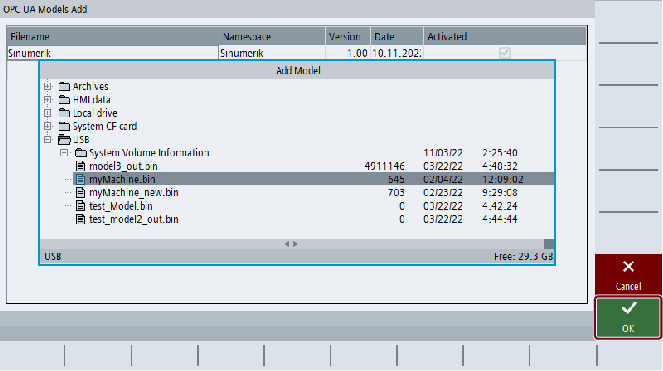

| Note |
|
The "Add Model" option is visible with user access rights, but manufacturer's access rights are required to add models. |
To add one or multiple customer specific object model(s), press the softkey "Add Model".
Softkey Add Model
The "Add Model" popup screen appears.
Select the binary file(s) from the SINUMERIK file system.
OPC UA Models Add
Press softkey "OK" to add the selected binary file(s).
Press softkey "Cancel" to return to "OPC UA Models" screen.